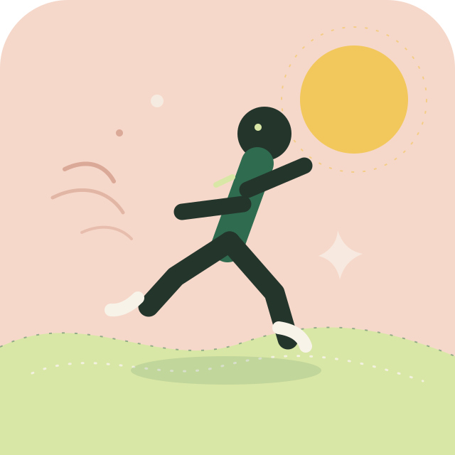

150分钟 / 周
让心跳快一点
快走、慢跑、骑车、跳绳都可以。每次 20–40 分钟，达到“能说话，但有点喘”的程度。

快走、慢跑、骑车、跳绳都可以。每次 20–40 分钟，达到“能说话，但有点喘”的程度。
深蹲、俯卧撑、弹力带、哑铃。每次 15–25 分钟，动作慢一点、稳一点，比追求次数更重要。
肩颈、髋部、腿后侧。久坐之后站起来拉一拉，比硬撑着舒服得多。
参考世界卫生组织身体活动建议：成年人每周进行 150–300 分钟中等强度有氧运动，并安排 2 次力量训练。 如有伤病或特殊健康状况，请先咨询专业人士，运动中不舒服就停下来。
不用一开始就计划半小时。换上鞋，走出去 5 分钟，身体常常会带你继续。
跳舞、骑车、羽毛球、散步都算。能让你想再来的运动，才更容易坚持。
给身体适应的时间。运动前热身，运动后拉伸，觉得不舒服就停下来休息。
不用把运动当成惩罚。今天状态好就多走一会儿，状态一般就拉伸十分钟。动一动，是为了让自己更舒服，而不是更累。